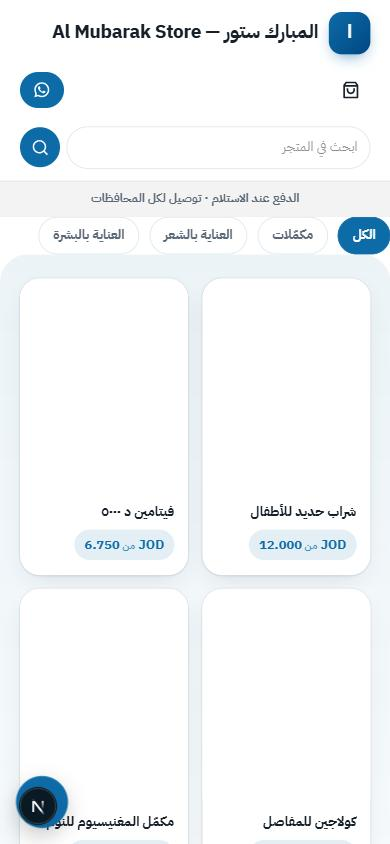
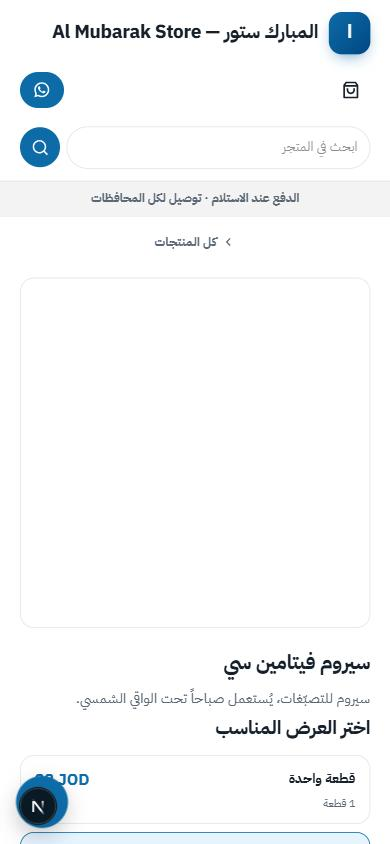
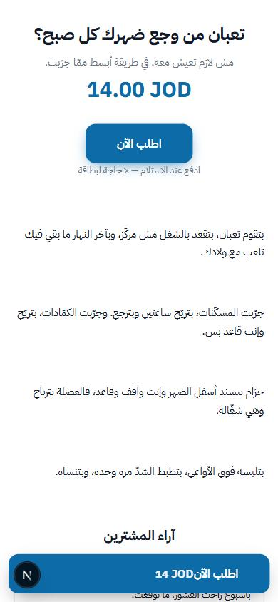
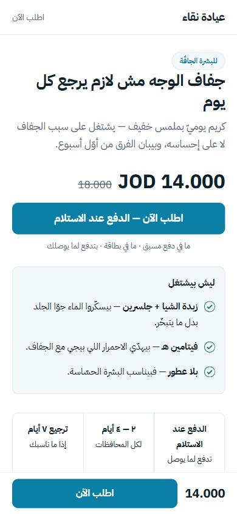
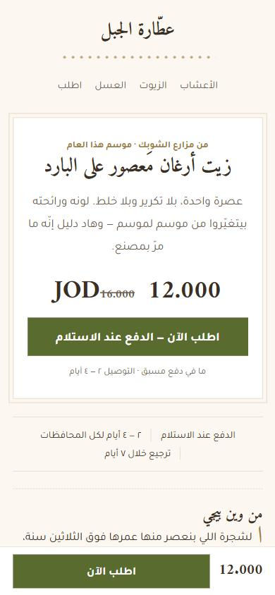
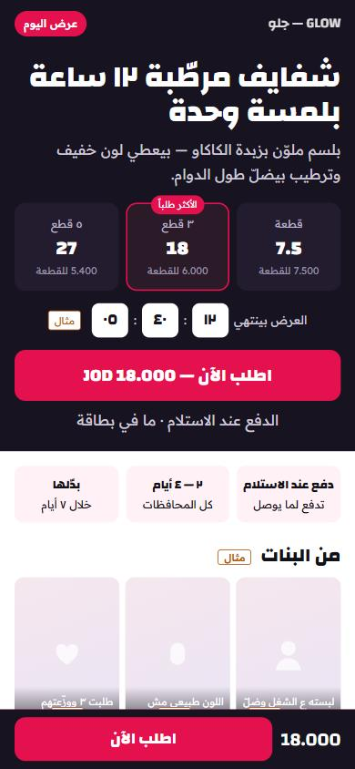

فحص بلا أي تعديل على الكود · فرع feat/storefront-1-multi-product · من c675565



لقطات حقيقية من الخادم المحلي، متجر «المبارك ستور»، عرض ٣٩٠ بكسل.
المحرّك بيعرض عليك خيارات، والعقد بيتحقّق منها، والقوالب بتختارها — والراسم بتجاهل ٧ منها.
| الجزء | معلَن | مرسوم | ميّت |
|---|---|---|---|
| الهيدر | ٥ | ٤ | minimal |
| الهيرو | ٥ | ٥ | — |
| قائمة الفئات | ٤ | ٣ | chips |
| بطاقة المنتج | ٤ | ٤ | — |
| صفحة الفئة | ٤ | ٠ | كلها الأربعة |
| صفحة المنتج | ٣ | ٣ | — |
| السلّة | ٢ | ١ | drawer |
categoryNav: chips — وchips ما إلها رسم، فبترجع للافتراضي بصمت.
| اليوم (١٠) | المقترح (٣) |
|---|---|
| متجر Single Product · صفحات الهبوط · التصميم · القوالب · القوائم · الصفحات التعريفية · البحث · اللغات · المسارات · الدومين |
المتجر — كل متاجرك، كل واحد ببطاقة؛ وجوّا المتجر تبويبات: الواجهة · المحتوى · العنوان · الحالة صفحات الهبوط — شغل يومي، بتضلّ لحالها منصّة التجريب — موجودة أصلاً |
كل رابط قديم بيحوّل للجديد — ما في صفحة بتضيع. و«فتح/إغلاق المتجر» و«الوصف» بينتقلوا من الإعدادات لجوّا المتجر، ما بينتسخوا.
ثلاثة قوالب مختلفة بالخط والهيدر والهيرو والبطاقة — مش بس بالألوان. كل وحدة مفتوحة على الهاتف بلا أي تمرير أفقي.



| أ — عيادة | ب — عطّار | ج — ترند | |
|---|---|---|---|
| لأي منتج | علاجي بيحلّ وجع معروف: كريم تجاعيد، سيروم، مكمّل | طبيعي بحكاية: زيوت، أعشاب، عسل، صابون | تجميل واندفاع: بلسم، مكياج، شي من ريل |
| الخط | عائلة واحدة، هادئة | عنوان نسخي + جسم هندسي | عنوان عريض جداً + جسم قصير |
| الهيدر | شريط رفيع، الاسم وحده | مكدّس بالنص وخط زخرفي | شفّاف فوق الهيرو، فيه العرض |
| الهيرو | نصّ + كرت «ليش بيشتغل» | لوح واحد بإطار مزدوج | العروض أول شي + عدّاد |
| البطاقة | أفقية — بتتقرا | مربّعة مؤطّرة — رفّ عطّار | بلاطات UGC — شبكة ريلز |
| الوزن | ٤٫٣ ك.ب | ٤٫٣ ك.ب | ٤٫٠ ك.ب |
كل رأي أو رقم في النماذج مكتوب جنبه مثال — ما في دليل اجتماعي مختلَق.
٦ بتضلّ (lab · herbs · ritual · pulse · tender + واحد مدموج) · ٣ بتندمج (pure في lab · heritage في herbs · souq في pulse · amber في ritual) · ١ بتتخبّى (pearl) — ولا واحد بينحذف.
| يدوي (موجود اليوم) | تلقائي (جديد) | |
|---|---|---|
| مين بيكتبه | إنت | العميل، بعد ما يستلم |
| كيف | بتكتبه بالمحرّر | رابط بترسله بالواتساب أو بيلاقيه بصفحة التتبّع |
| بيتسجّل معه | مصدره (واتساب · تعليق · مكالمة) ومين أضافه وإيمتى، وصورة إثبات خاصة ما بتنعرض | رقم الطلب — مرّة وحدة لكل طلب وموافقة العميل على النشر |
| بيظهر | الاسم والنص اللي كتبته | الاسم الأول والمدينة بس — لا هاتف ولا عنوان |
| شارة «مشتري مؤكَّد» | أبداً | نعم |
التبديل التلقائي: لما يصير عند المنتج ٥ آراء موثّقة، النظام بيحوّله لتلقائي لحاله وبيعلمك — وبتقدر ترجّعه.
docs/storefront/AUDIT.md · families/a,b,c.html · shots/